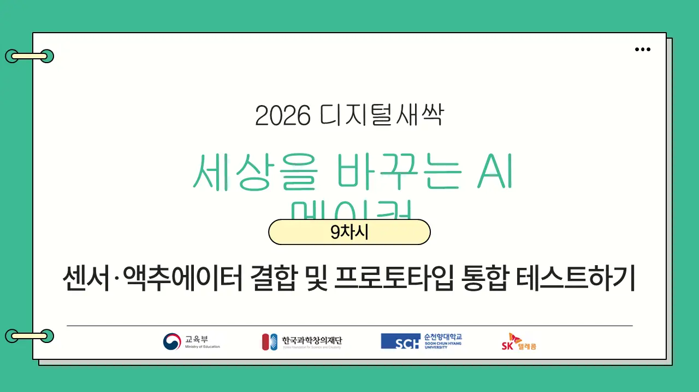
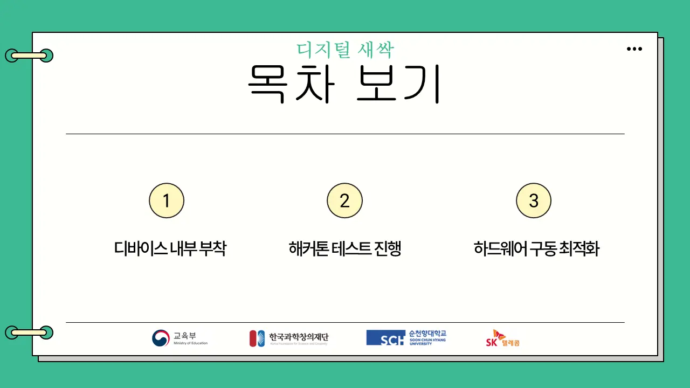
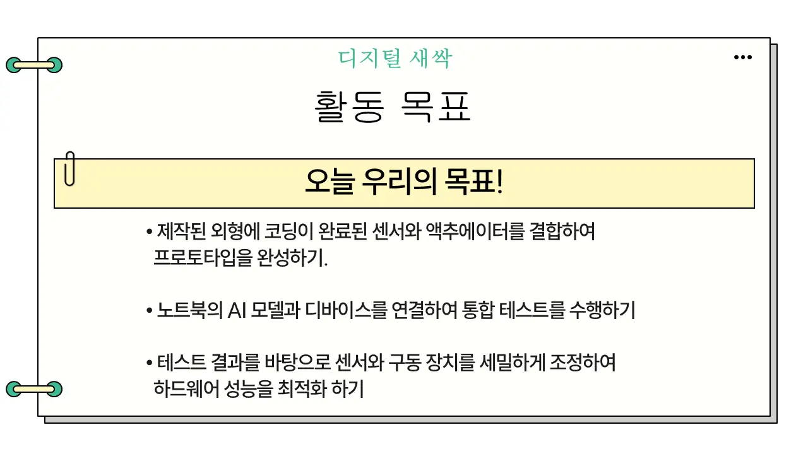
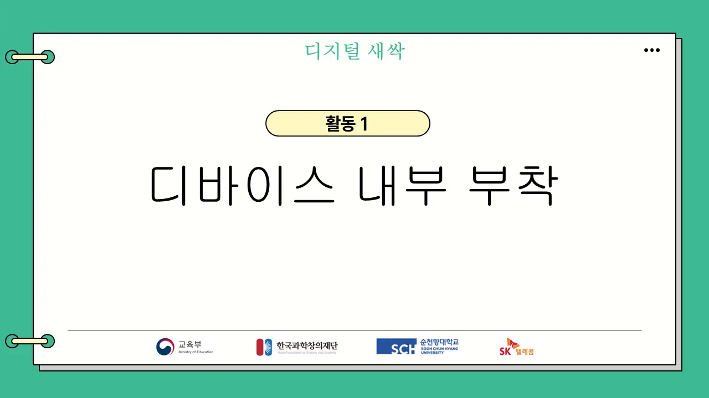
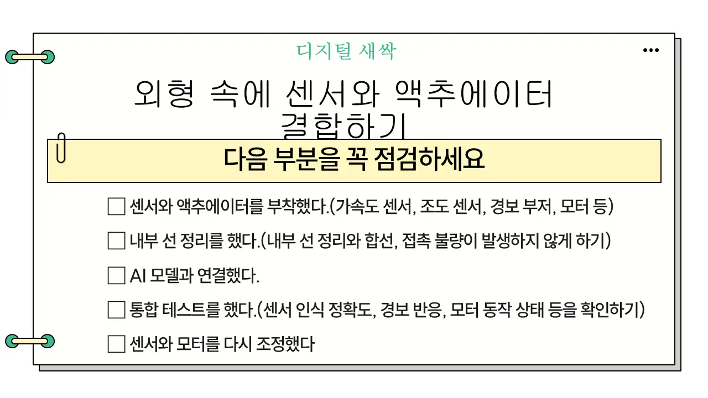
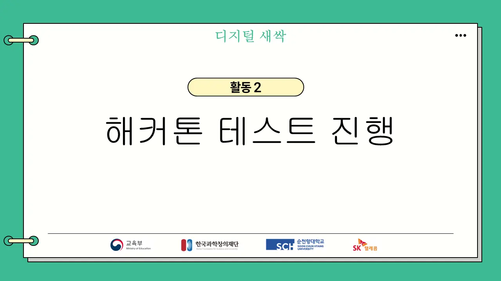
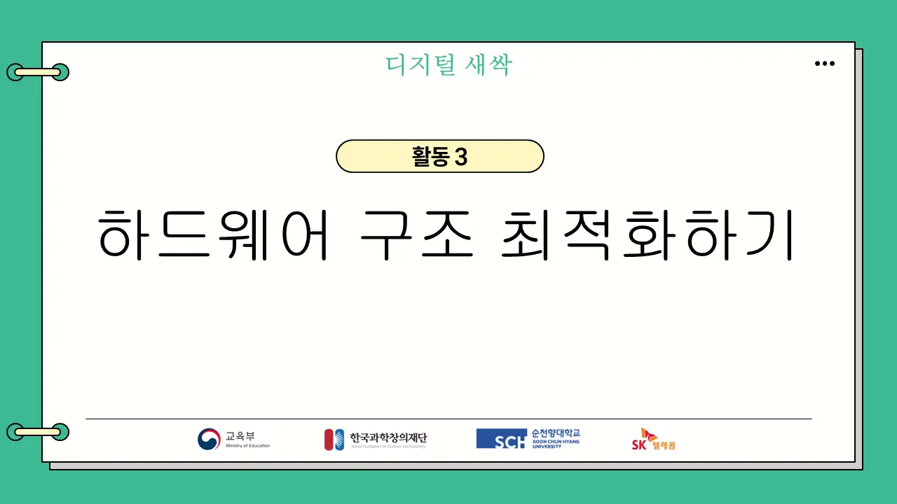
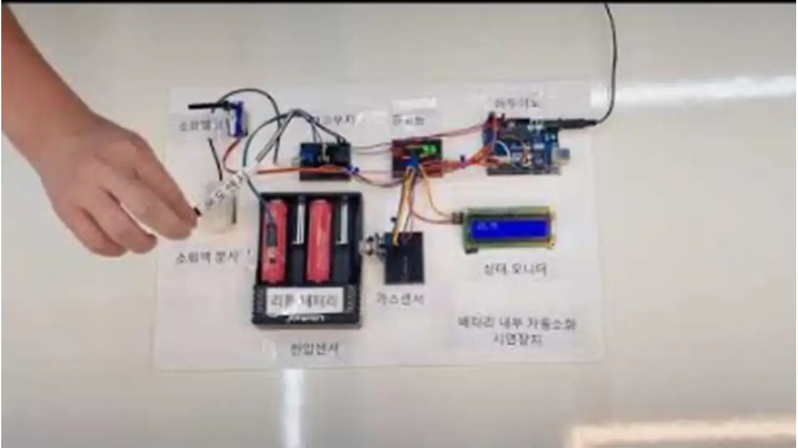
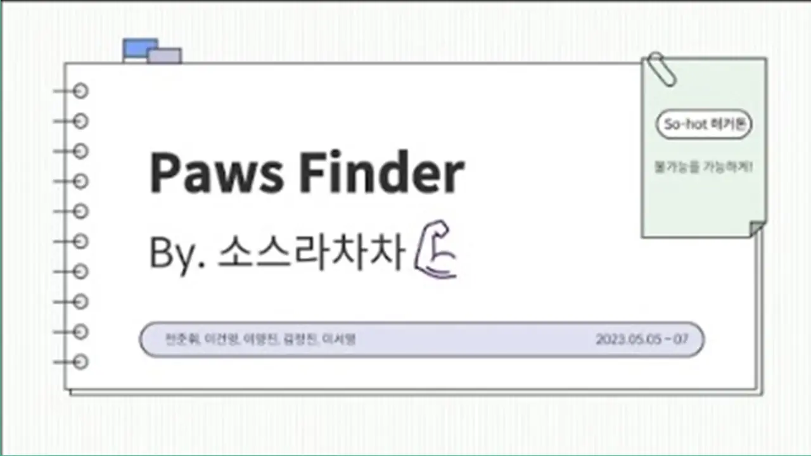

교육할 내용
- 교안외형 속에 센서·액추에이터 결합, 내부 선 정리
- 교안노트북 AI 모델과 디바이스 연결, 통합 테스트
- 교안하드웨어 구동 최적화
주의점
- 주영욱 대표글루건으로 부착 금지. 반납하는 렌탈 키트다. 점토·양면테이프·스카치테이프로 살짝
- 주영욱 대표한 조에 한 세트만. 두 세트를 쓸 거면 판도 두 개로 나누고, 끝나면 철저히 분리해 넣는다
- 주영욱 대표순위를 매기는 해커톤 경쟁은 하지 않는다. 못 만든 학생이 자괴감을 느낀다
- 연수 영상핀이 물리적으로 약하다. 선이 꼬이면 합선이다. 점검표대로 정리하며 조립한다
중요한 점
- 주영욱 대표‘프로토타입 통합’ = 만들어 둔 외형 안에 내부를 넣고 정상 작동하는지 테스트하는 것
- 주영욱 대표‘액추에이터’는 학생들이 모른다 → “센서 신호를 받아 실제로 움직이는 부분, 모터 같은 것”
- 주영욱 대표피드백은 장점과 독창성 중심. “어떤 면에서 참신한지” 말하게 한다
주영욱 대표 코멘트
주영욱 대표9차시부터 프로토타입 만들기인데, 어려운 말로 예쁘게 포장해 놨지만 말 그대로 외형 안에 내부를 넣고 정상 작동하는지 테스트하는 거예요. 통화 49:39
주영욱 대표글루건으로 붙여 버린 경우가 있거든요. 절대 하지 말고. 다시 상자에 다 넣어야 되거든요. 저는 점토에 살짝 얹게 했어요. 통화 50:12
주영욱 대표단점을 얘기하라 하지 말고, 서로 만들어 놓은 걸 보면서 장점을 얘기해 보라고 해요. 어떤 면에서 참신한지, 독창성이 있는지. 통화 53:23
주영욱 대표섞이지 말라. 웬만하면 한 조당 교구 한 세트만. 두 개를 쓸 거면 판을 두 판 쓰고, 하고 나서 철저하게 분리해서 넣으라고 지시해 줘야 돼요. 통화 1:15:13
교안 장표 10장 · 코멘트 3곳










주영욱 대표부착은 점토·테이프로. 글루건 금지(반납 키트).


주영욱 대표경쟁·순위 대신 서로 장점 말하기.


주영욱 대표선 정리 = 합선 예방. 핀이 약하다.



